Manual de Gestión Shopify × Dreamlove
Operativa diaria: pedidos, clientes, marketing, informes y más
Índice
-
Inicio (panel de control)
La página Inicio del admin te muestra, de un vistazo, el estado de la tienda y accesos a tareas comunes. Para analizar el rendimiento en detalle, usa Informes y estadísticas (Analytics) y Vista en tiempo real (Live View).
1) Qué verás en Inicio
- Resumen rápido de actividad reciente y alertas (p. ej., pedidos a revisar o tareas sugeridas).
- Accesos directos a crear descuentos, campañas o revisar productos (según apps y canales instalados).
- Búsqueda global en la barra superior para encontrar pedidos, productos, clientes, apps, canales o ajustes.
2) Métricas y análisis (Analytics → Informes y estadísticas)
- Abre Analytics → Informes y estadísticas para ver tarjetas de ventas, pedidos, visitantes, conversión y más.
- Puedes personalizar las secciones y tarjetas: añadir, cambiar tamaño, reordenar o eliminar para centrarte en lo importante.
- Profundiza con Informes y filtra/segmenta por fecha, canal, colección, cliente, etc. Exporta si necesitas hojas de cálculo.
3) Vista en tiempo real (Analytics → Live View)
- Monitorea actividad en vivo de todos los canales: visitantes, sesiones, checkouts y pedidos confirmados.
- Incluye mapa 2D/globo 3D para ver la procedencia de la actividad y métricas clave en el momento.
4) Trucos de productividad
- Atajos con /: presiona / para abrir búsqueda y escribe “descuentos”, “clientes”, “envíos”…
- Vistas y filtros en listas (Pedidos, Productos, Clientes): guarda vistas con filtros/ordenación para tu rutina.
- Live View durante campañas/picos: confirma si las visitas pasan a checkout o si hay caídas en un paso.
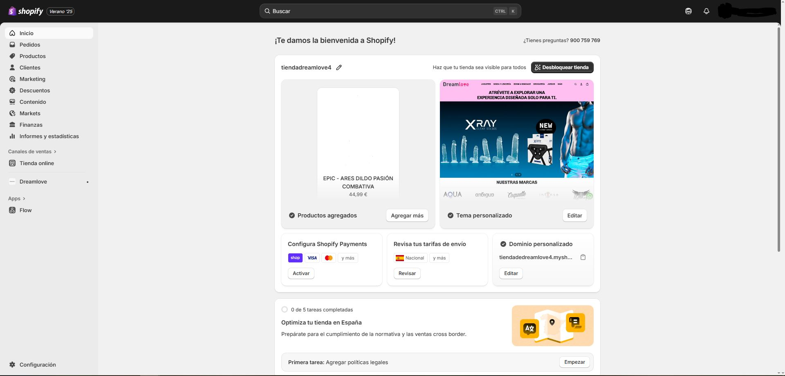
Inicio: acceso a métricas, búsqueda y tareas frecuentes. Para análisis profundo, ve a Informes y Live View. -
Pedidos
Gestiona todo el ciclo: listado y filtros, borradores, edición, cobros/capturas, preparación y seguimiento, cancelaciones, reembolsos y devoluciones/cambios.
1) Lista, vistas y filtros
- Ve a Pedidos para ver todos los pedidos. Crea vistas guardadas con filtros (estado, pago, canal, etiquetas, fechas) y columnas personalizadas para tu operativa diaria. Guía general · Buscar y ver pedidos.
2) Estados del pedido
- Comprende estado de pedido, estado de pago (p. ej., Autorizado, Pagado) y estado de preparación (Sin preparar, Preparado, Parcial), además del estado de devolución. Úsalos para priorizar y crear vistas. Estados de los pedidos.
- En el detalle del pedido, consulta la línea de tiempo, etiquetas, notas, historial de pagos y contacta al cliente. Gestionar detalles del pedido.
3) Borradores (pedidos manuales)
- Crea un pedido preliminar con productos, cliente, descuentos e impuestos; envía factura por email o cobra al momento (según métodos activos). Al pagarse, se convierte en pedido normal. Borradores e facturas · Crear borrador.
- Opcional B2B: borradores para empresas y cobro (también Tap to Pay en app, según disponibilidad). Cobrar borradores.
4) Editar pedidos
- Puedes añadir o quitar productos, ajustar cantidades, editar cargos de envío y aplicar descuentos (según limitaciones de artículos ya preparados). Editar pedidos · Editar productos · Editar envío · Consideraciones.
5) Cobros: autorización y captura
- Con captura automática, Shopify cobra al autorizar. Con captura manual, el pago queda “Autorizado” hasta que lo captures (parcial o total) antes de caducar. Autorización y captura.
6) Preparación y seguimiento
- En el pedido, marca como Preparado, asigna transportista y añade número(s) de seguimiento; el cliente verá el estado y podrá seguir el envío desde la página de estado del pedido. Añadir tracking · Página de estado del pedido.
7) Cancelaciones y reembolsos
- Cancelar detiene el procesamiento (útil por petición del cliente, stock no disponible o riesgo de fraude). Decide si reembolsas ahora o más tarde y si repones inventario. Cancelar pedidos.
- Reembolsar total o parcial (y opcionalmente reponer stock). Reembolsos de pedidos.
- Novedad: puedes devolver a crédito en tienda al procesar una devolución/cambio (comprueba disponibilidad/país). Store credit en devoluciones (novedad).
8) Devoluciones y cambios
- Crea y gestiona devoluciones; envía instrucciones o etiqueta de retorno y añade artículos de cambio si procede. Devoluciones y cambios · Crear y procesar devoluciones.
- Define reglas de devolución (especialmente si usas POS) para elegibilidad y cargos. Return rules.
9) Prevención de fraude
- Revisa el análisis de fraude y automatiza con Flow para marcar/retener pedidos de alto riesgo. Análisis de fraude · Proteger pedidos.

Pedidos: vistas y filtros, borradores, edición, cobro/captura, preparación y devoluciones. -
Productos
Creación/edición, variantes, inventario por ubicación, colecciones, datos personalizados y publicación en canales.
1) Crear y editar productos
- Productos → Agregar producto: título, descripción (editor enriquecido), medios (imágenes/vídeo/3D), precio y precio comparado, costo, impuestos, peso/envío, SKU, código de barras, categoría y tipo de producto, proveedor (marca) y etiquetas. Guía de productos
- Estado (borrador/activo/archivado), programación y disponibilidad por canal controlan dónde/cuándo se publica.
2) Variantes y opciones
- Hasta 3 opciones (p. ej., Talla/Color) y hasta 100 variantes por producto. Cada variante tiene su propio precio, SKU, código de barras, costo, peso, imagen y stock. Variantes
3) Medios del producto
- Sube imágenes, añade vídeo y modelos 3D; el primer elemento es el “principal”. Alt text para accesibilidad/SEO. Medios del producto
4) Inventario y ubicaciones
- Activa Rastrear cantidad y gestiona stock por ubicación (almacenes/tiendas). Ajustes, transferencias y preparación parcial si procede. Ubicaciones · Inventario
5) Colecciones
- Automáticas (por reglas: etiquetas, tipo, precio, disponibilidad) y Manuales (curadas). Ordena por ventas, fecha, precio o manual. Publica colecciones en los canales deseados. Automáticas · Manuales · Disponibilidad
6) Editor masivo y CSV
- Editor masivo: selecciona productos/variantes y edita en tabla (precio, stock, etiquetas, etc.). Edición masiva
- Importar/Exportar CSV: usa la plantilla oficial; puedes cargar imágenes por URL. CSV de productos
7) Datos personalizados: Metacampos y Metaobjetos
- Amplía el modelo de datos con metacampos (p. ej., materiales, cuidados, fichas técnicas) y metaobjetos (estructuras reutilizables, p. ej., “Guía de tallas”). Metacampos · Metaobjetos
8) SEO y canales
- Edita Título/Meta descripción y URL (maneja redirecciones si cambias el handle). Alt text en imágenes. SEO en Shopify
- Marca la disponibilidad en Tienda online, Shop, Google & YouTube, etc. Canales de venta
9) Envío, aduanas e impuestos (por producto)
- Peso para tarifas de envío, HS code y país de origen para aranceles transfronterizos; marca si el producto requiere envío. Tarifas de envío · Impuestos
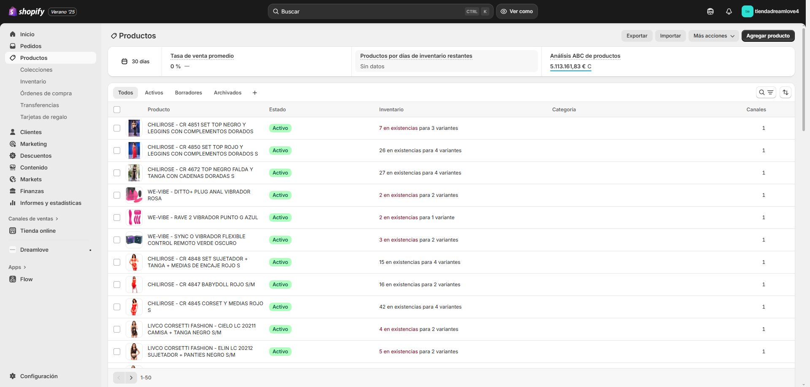
Productos: variantes, inventario, colecciones y atributos. -
Clientes
Gestiona perfiles, segmenta tu base, comunica con consentimiento y cumple privacidad. Desde Clientes puedes ver todos los perfiles, crear segmentos, importar/exportar y trabajar con notas/etiquetas.
1) Lista, vistas y segmentos
- Lista y filtros: busca por nombre, email, etiquetas, estado de marketing, gasto, pedidos, fecha, etc. Guarda vistas para tu trabajo diario. Clientes en Shopify.
- Segmentos (dinámicos por reglas): crea segmentos con el editor (ShopifyQL + filtros) y reutilízalos para email, descuentos o automatizaciones. Segmentación · Crear segmentos · Referencia de filtros.
- Usar segmentos: envía campañas o crea descuentos dirigidos desde el propio segmento. Gestionar segmentos.
2) Perfiles de cliente: datos, notas y etiquetas
- Abre un perfil para ver datos de contacto, direcciones, gasto, pedidos, marketing y cronología (historial con notas internas, no visibles al cliente). Cronología · Gestionar clientes.
- Usa etiquetas para clasificar (VIP, riesgo, B2B…) y combinarlas con segmentos/automatizaciones. Etiquetas.
3) Importar/Exportar clientes (CSV)
- Exporta tu lista o importa nuevas altas/actualizaciones con la plantilla oficial CSV. Importar/Exportar clientes · CSV en Shopify.
- Duplicados: si hay emails/teléfonos repetidos, Shopify omite registros según reglas; revisa antes de importar.
4) Marketing y consentimiento
- Gestiona el estado de suscripción a email y aplica doble opt-in según tu región. Lista de suscriptores · Privacidad del cliente · Recopilar contacto.
5) Privacidad y solicitudes de datos (RGPD, etc.)
- Procesa solicitudes de acceso/eliminación desde el perfil: Más acciones → Borrar datos personales. Solicitudes de datos · RGPD · Cumplir RGPD.
6) Comunicación e interacción
- Envía emails a clientes individuales desde el admin o usa Shopify Inbox para chat (podrás compartir productos y descuentos). Email desde el admin · Conversaciones en Inbox.
7) Cuentas de cliente (login)
- Activa las nuevas cuentas de cliente (inicio de sesión sin contraseña, B2B, etc.) desde Configuración → Cuentas de cliente. Cuentas de cliente.
8) B2B (opcional)
- Migra clientes a empresas B2B y gestiona tiendas combinadas (D2C + B2B) si procede. Migrar clientes a B2B · Checklist tienda combinada.
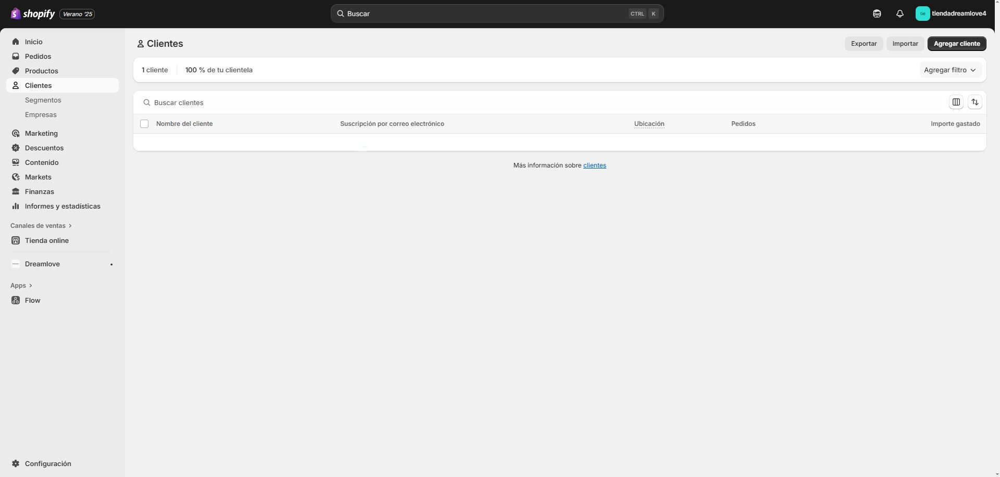
Clientes: segmentos, datos, notas/etiquetas, marketing y privacidad. -
Marketing
Desde Marketing creas campañas (multicanal) y automatizaciones (email/SMS/push), y revisas su rendimiento. Configurar marketing.
1) Campañas (multicanal)
- Crea una campaña y agrupa actividades (emails, redes, anuncios). Shopify genera enlace completo con tracking, enlace corto y código QR para medir tráfico y ventas. Crear campañas · Funciones de Campaigns.
- Mide el rendimiento: resumen, sesiones/ventas atribuidas y “Top channel performance”. Marketing performance · Informes de marketing.
2) Automatizaciones
- Plantillas de bienvenida, carritos/checkout abandonado, winback y post-compra con Shopify Email o apps/Flow. Automatizaciones · Tipos.
- El checkout abandonado se gestiona ahora desde Marketing (más control de envío, segmentación y diseño). Nueva automatización de checkout abandonado · Recuperar checkouts.
3) Shopify Email (boletines y flujos)
- Crea y envía emails desde el admin con plantillas y tu marca. Shopify Email · Plantillas.
- Precio: 10.000 emails gratis/mes; después se aplican cargos (tarificación por volumen). Las automatizaciones de checkout abandonado no consumen esos créditos. Precios (EN) · Precios (ES) · Contabilización.
- Asegura la entregabilidad: configura remitente y autentica dominio (SPF/DKIM). Configurar email del remitente.
- Capta suscriptores con el bloque de newsletter del tema o apps. Formulario de newsletter.
4) Anuncios y audiencias
- Sincroniza con apps/canales (Google & YouTube, Meta, etc.) y comparte datos de eventos para atribución. Marketing app data sharing.
- Shopify Audiences (elegibilidad requerida): genera listas de públicos para plataformas de anuncios (EE. UU./Canadá). Audiences (EN) · Configurar · Usar audiencias.
5) Medición y atribución
- Consulta el resumen de marketing y los informes (sesiones, tasa de conversión, ventas atribuidas, rendimiento por canal). Marketing performance · Informes de marketing.
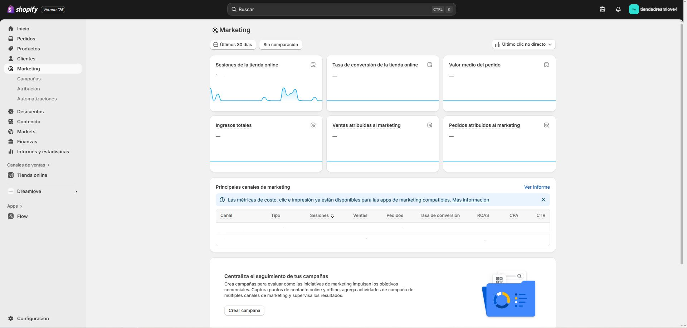
Marketing: campañas multicanal, flujos automatizados y medición. -
Descuentos
Gestiona códigos y descuentos automáticos, combínalos según reglas, programa fechas y limita su uso. Los descuentos se aplican sobre el subtotal antes de impuestos; después se calculan los impuestos. Guía general
1) Métodos
- Códigos de descuento: el cliente introduce un código en el checkout. Útiles para campañas, influencers o segmentos. Códigos
- Descuentos automáticos: se aplican solos cuando el carrito cumple condiciones (importes, cantidades, colecciones…). Automáticos
2) Tipos más comunes
- % o importe fijo sobre productos/colecciones o pedido.
- Envío gratis con umbral o condiciones.
- Compra X y obtén Y (BOGO): por cantidad o por importe gastado; Y puede ser gratis o con %/importe. Buy X get Y
- Más tipos y consideraciones: Tipos de descuento
3) Reglas y elegibilidad
- Condiciones: productos/colecciones específicos, etiquetas, mínimo de compra, cantidad de artículos, primer pedido, etc.
- Audiencia: todos los clientes o segmentos concretos (por ejemplo “VIP” o “Últimos 90 días sin comprar”).
- Límites: fecha/hora de inicio y fin, límite total de usos, límite por cliente.
4) Combinación de descuentos
- Activa combinaciones para permitir que un código conviva con otros descuentos (p. ej., envío gratis + % en producto), según las combinaciones admitidas. Combinar descuentos
- Si hay varias promociones elegibles, Shopify aplica la mejor ventaja posible según las reglas activas.
5) Consideraciones del checkout
- Los descuentos creados en el admin no se aplican en la página pospago (post-purchase). Códigos · Automáticos
- En Shopify POS hay reglas/limitaciones específicas para tipos de descuento y combinaciones.
6) Buenas prácticas
- Usa nombres/códigos claros y documenta condiciones en la descripción.
- Programa con antelación (Black Friday, rebajas) y prueba el flujo de checkout antes de publicar.
- Controla canibalizaciones: limita uso por cliente y define compatibilidades con envío gratis.
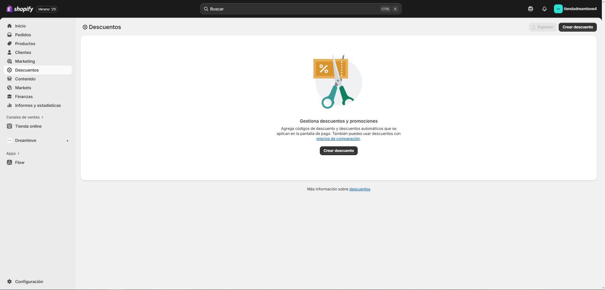
Descuentos: códigos, automáticos, combinación y programación. -
Contenido
Gestiona las páginas, blogs, archivos (medios) y la navegación. Publica y programa contenidos, añade SEO/ACCESIBILIDAD y ordénalos desde tus menús.
1) Páginas (Tienda online → Páginas)
- Crear/editar páginas como Sobre nosotros o Contacto, controlar visibilidad (mostrar/ocultar) y programación de publicación. Crear y editar páginas.
- Selecciona plantilla de página (depende del tema) y completa Título/Descripción para SEO desde la configuración de la página.
2) Blogs y entradas
- Crea uno o varios blogs (p. ej., “Noticias”, “Guías”) y redacta entradas con texto, imágenes o vídeo; publica ahora o programa la entrada. Escribir entradas · Gestionar entradas.
- Opcional: activa comentarios (según tema) y define autor, etiquetas y extracto para SEO/UX.
3) Archivos (Contenido → Archivos)
- Sube imágenes, PDFs, vídeos o logos desde Contenido → Archivos y reutilízalos en páginas, productos, temas o metaobjetos. Subir y gestionar archivos.
- Puedes cargar hasta 20 a la vez; luego copia la URL del archivo para insertarlo en tu contenido.
4) Menús y navegación (Contenido → Menús)
- Edita los menús Principal y Pie de página; añade enlaces a productos, colecciones, páginas, entradas o URLs externas. Menús y enlaces · Menús predeterminados.
- La ubicación exacta donde se muestran depende del tema (ajústalo en el editor del tema).
5) Tema y secciones (Tienda online → Temas → Personalizar)
- Personaliza el diseño con el editor de temas (colores, tipografías, secciones y bloques); cambia el contenido de la página de inicio y del resto de plantillas del tema. Editor de temas.
- Con Online Store 2.0 puedes tener secciones en prácticamente cualquier página (plantillas JSON) y conectar fuentes dinámicas (metacampos/metaobjetos) a los bloques. OS 2.0 (secciones y fuentes dinámicas).
- Si lo prefieres, empieza con nuestras plantillas recomendadas.
6) SEO y accesibilidad del contenido
- Edita título, meta descripción y URL en páginas/entradas; añade texto alternativo a las imágenes para SEO/ACCESIBILIDAD. SEO en Shopify (ayuda).
- Buen punto de partida: guía práctica del blog de Shopify (actualizada). SEO: cómo generar más tráfico.
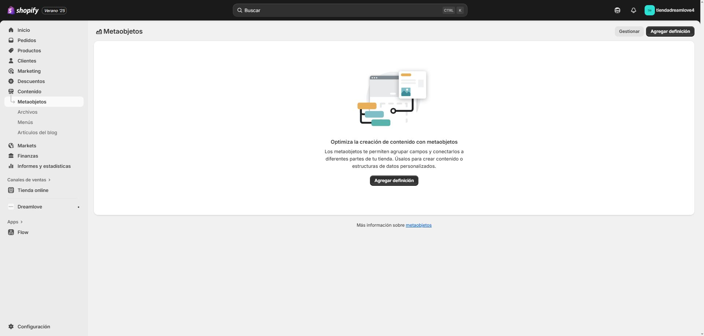
Contenido del sitio: páginas, entradas, archivos y navegación. Ajusta su diseño desde el editor de temas. -
Markets
Centraliza la venta internacional por mercados (países/regiones o conjuntos de clientes) y personaliza catálogo, dominios/URLs, idioma, divisa y precios por mercado.
1) Crear y organizar mercados
- Ve a Configuración → Mercados. Crea mercados y, si necesitas, submercados que heredan ajustes del principal (catálogo, moneda, tema, etc.). Qué es Markets · Crear y gestionar mercados.
- Puedes previsualizar la experiencia de un mercado (e idiomas asociados) desde el admin. Vista previa de mercados.
2) Dominios y estructura de URL
- Asigna a cada mercado un dominio o subcarpeta localizada (recomendadas por facilidad y SEO). Dominios internacionales · URLs únicas por mercado.
- Ejemplo:
/es/para España,/fr/para Francia, o subdominios comofr.tutienda.com. Guía (ES).
3) Idiomas y traducciones
- Activa idiomas por mercado y traduce con la app oficial Translate & Adapt (auto-traducción de 2 idiomas gratis y editor lado a lado). Cómo usar Translate & Adapt · App en App Store.
- Revisa limitaciones de contenidos/idiomas soportados. Limitaciones.
4) Divisas y precios por mercado
- Define moneda del mercado y habilita monedas locales cuando el mercado agrupa varios países; puedes usar tipo de cambio automático o fijar tasas manuales. Configurar monedas locales (ES) · Precios en divisas locales.
- Las tarifas de envío pueden mostrarse en la moneda local si la zona es de un solo país (o varios con la misma divisa). Envío en moneda local.
5) Catálogo y tema por mercado
- Restringe/permite productos por mercado y ajusta el catálogo visible cuando sea necesario (B2C/B2B, compliance, marcas). Personalizaciones por mercado.
- Personaliza el tema por mercado (copias de secciones, textos e imágenes específicas) desde el editor con el selector “Mercado”. Anulaciones por mercado en el tema · Cómo funcionan.
6) Aranceles e impuestos de importación
- Puedes calcular y cobrar aranceles/impuestos en el checkout (evitas pagos a la entrega). Revisa requisitos e Incoterms (DDP recomendado para precio total). Cobrar aranceles en checkout · Aranceles e impuestos (ES).
- Opcional: Managed Markets simplifica cross-border (pagos, impuestos, logística y localización). Resumen Managed Markets · Configurar.
7) Buenas prácticas
- Usa subcarpetas para mercados por su sencillez y beneficios SEO; activa idioma, moneda y catálogo correctos. Dominios internacionales.
- Prueba cada mercado (checkout, precios, envío, traducciones) con la vista previa de mercado antes de publicar. Gestionar/previsualizar mercados.
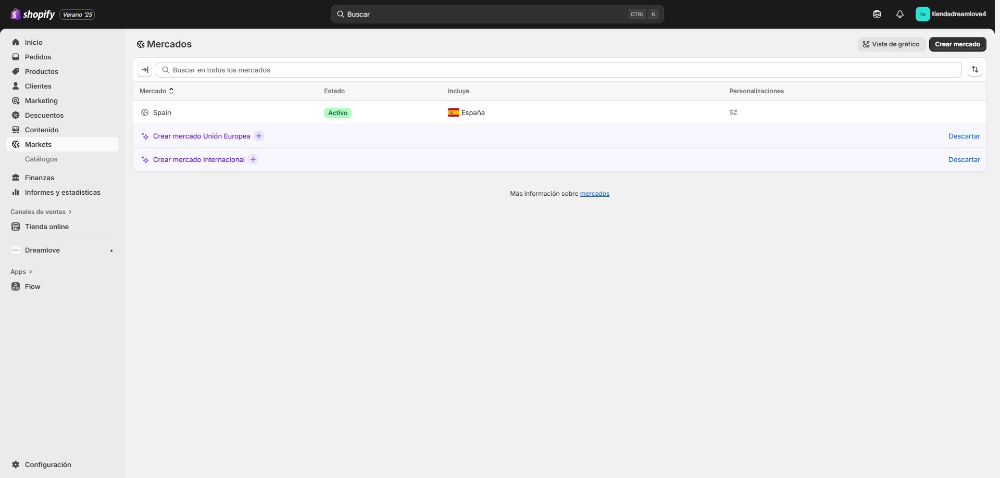
Markets: idiomas, divisas, catálogo y precios localizados por país/región. -
Finanzas
Control de facturación de Shopify (planes, apps, etiquetas), pagos recibidos (payouts) y reportes financieros para conciliación.
1) Facturación de Shopify (Configuración → Facturación/Billing)
- Ver/Exportar facturas (próximas y pasadas) y Estado de cargos (últimos 90 días). Viewing your bills · View or export bills.
- Ciclos y umbrales de facturación (por qué se adelanta una factura). Ciclos y umbrales (ES).
- Cargos de apps: suscripciones, uso, prorrateos y cambios de plan. Cargos de la aplicación (ES).
- Página general para gestionar facturas. Managing your bills.
2) Pagos recibidos (Shopify Payments → Pagos/Payouts)
- Ver/Exportar payouts, periodos de pago y tarifas. Recibir pagos (ES) · Payouts (EN).
- Resolver pagos faltantes o inferiores y entender retrasos. Payouts más bajos (ES) · Payout delays (EN).
- Si usas otro proveedor, revisa cómo y cuándo te pagan. Obtener tu pago (ES).
3) Informes y conciliación
- Analytics → Informes → categoría Finanzas (Resumen financiero, Impuestos, Ventas vs Pagos, etc.). Informes financieros (ES) · Tipos de informes (EN).
- Conciliación sugerida: exporta CSV de payouts y cruza con pedidos cobrados (fechas, tasas, reembolsos y neto).
4) Suscripciones y cargos
- Revisa tus suscripciones pagas (plan y apps) desde Facturación. Charges (EN) · FAQ de facturación.
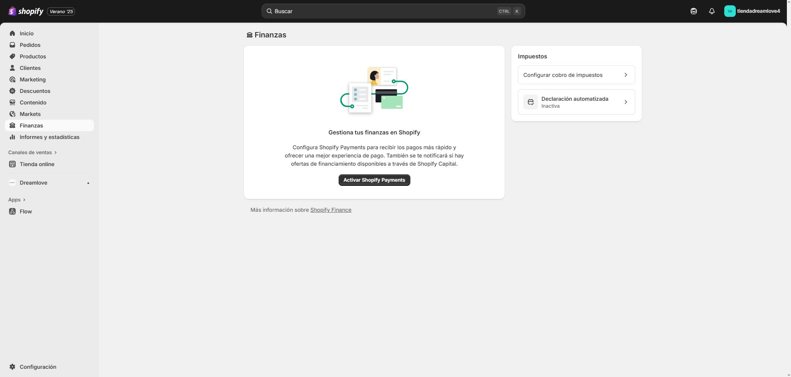
Finanzas: facturación, pagos recibidos y conciliación. -
Informes y estadísticas
Analiza ventas, clientes, marketing e inventario (la disponibilidad de algunos reportes depende del plan).
1) Panel de resumen
- Analytics → Overview: tarjetas y gráficos clave (ventas, AOV, sesiones, conversión, canales). Puedes personalizar secciones y métricas. Configurar el Overview
2) Live View (tiempo real)
- Mapa/globo con sesiones, carritos, checkouts y compras “en vivo”. Live View (EN)
3) Informes predeterminados
- Categorías: Adquisición, Comportamiento, Clientes, Finanzas, Inventario, Marketing, Pedidos, Ventas, etc. Default reports (EN)
4) Exportación y guardado
- Exporta informes a CSV, XML, JSONL o Parquet (y para PDF, imprime/“Guardar como PDF”). Exportar informes
5) Cohortes y embudos
- Cohorte de clientes: retención y repetición de compra por mes de primera orden. Customer cohort analysis
- Resumen de conversión (por pedido) y analytics de pedidos: Resumen de conversión · Order analytics
6) Informes personalizados y análisis avanzado
- Analytics → Reports: ajusta columnas, filtros y guarda vistas. Reports
- ShopifyQL Notebooks: consultas y visualizaciones con ShopifyQL. ShopifyQL Notebooks
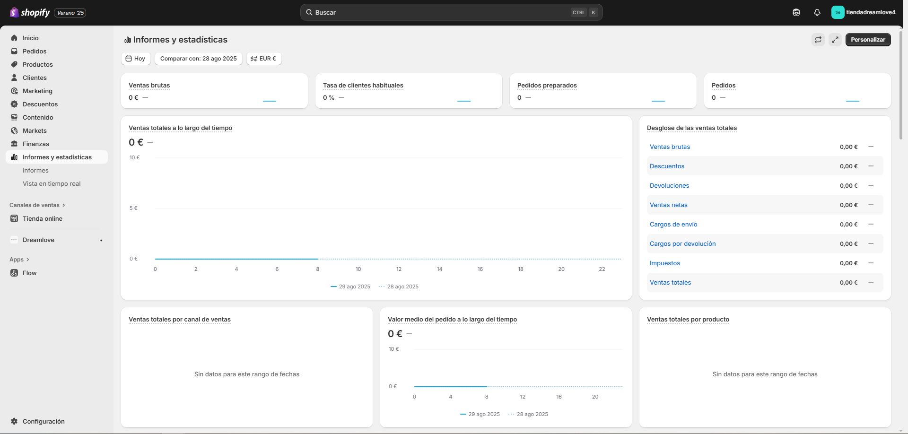
Informes y analítica por área. -
Canales de ventas
Conecta plataformas (Shop, Google & YouTube, Facebook & Instagram, marketplaces, etc.) para vender fuera de tu tienda online y gestionarlo todo desde Shopify (productos, pedidos, clientes). Qué son los canales de venta.
1) Añadir / gestionar canales
- Ve a Configuración → Aplicaciones y canales de ventas → Visitar Shopify App Store → busca el canal → Agregar canal. Guía: Gestionar canales de ventas (ES).
- Al agregar un canal, tus productos “activos” quedan disponibles en él por defecto; puedes ajustar la disponibilidad por canal desde cada producto/colección. Guías: Disponibilidad por canal · Disponibilidad de colecciones (EN).
- Cada canal muestra su panel de rendimiento (ventas y tráfico) en la página de inicio del admin: Ver dashboards por canal (EN).
2) Canales principales
- Shop (app Shop): añade el canal y personaliza tu tienda en Shop (activos, colecciones, URL, banner). Configurar Shop (EN) · Personalizar tienda en Shop (EN) · Productos y colecciones en Shop (EN).
- Google & YouTube: instala el canal, conecta Google Merchant Center, sincroniza productos y resuelve rechazos. Canal Google & YouTube (ES) · Primeros pasos (EN).
- Facebook & Instagram by Meta: configura el catálogo unificado para Facebook Shop, Instagram Shopping y campañas. Visión general (ES) · Configuración (EN).
- Marketplaces (Amazon, eBay, Walmart, Target Plus) vía Shopify Marketplace Connect: Guía (ES) · Configurar (ES) · Publicar/gestionar productos (ES) · Gestionar pedidos (ES) · App en Shopify App Store.
3) Buenas prácticas
- Revisa políticas y requisitos de cada canal (atributos obligatorios, categorías, SLAs, etc.). Gestión y requisitos por canal (ES).
- Consulta el listado de canales compatibles y elige los que encajan con tu estrategia: Canales disponibles (ES).
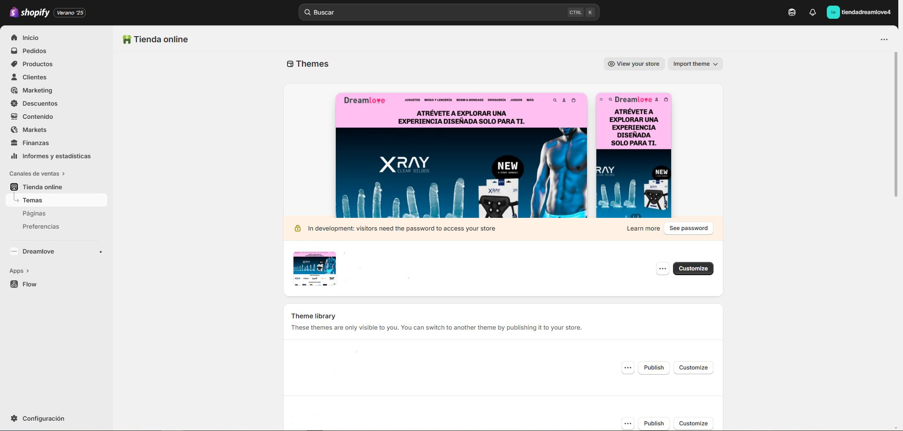
Canales: catálogo, métricas y requisitos. -
Apps
Instalación, permisos y bloques de app (Online Store 2.0). Revisa rendimiento y limpieza periódicamente.
1) Instalar apps
- Shopify App Store: busca la app → Instalar → autoriza permisos. Instalar aplicaciones (ES).
- Enlace externo (instalación directa desde el proveedor). Install via link (EN).
- Aplicaciones personalizadas (custom apps): Configuración → Aplicaciones y canales de ventas → Desarrollar apps → habilita desarrollo → crea e instala seleccionando scopes (permisos de API). Apps personalizadas (ES).
2) Gestionar apps y canales
- Configuración → Aplicaciones y canales de ventas: abrir, fijar (pin), buscar y administrar. Gestionar aplicaciones (ES).
3) Permisos y privacidad
- En la pantalla de instalación verás los permisos solicitados. Revisa la política de privacidad del desarrollador y cómo trata los datos personales. Permisos de la app y datos personales (ES).
4) Bloques de app y app embeds (OS 2.0)
- Muchas apps añaden app blocks (secciones/ bloques que colocas donde quieras) o app embeds (elementos que se activan desde el editor de temas). Extend your theme with apps (EN) · Editor de temas (ES).
- Para comportamiento avanzado (desarrolladores): theme app extensions. Configurar theme app extensions (Dev).
5) Apps de checkout
- Configuración → Pantalla de pago → Personalizar → configura apps de checkout (bloqueo, pagos exprés, etc.). Apps de pantalla de pago (ES).
6) Desinstalar y limpieza
- Desinstala desde Configuración → Aplicaciones y canales de ventas. Desinstalar aplicaciones (ES).
- Si la app usaba app blocks/embeds, al desinstalar normalmente se retiran del tema; si quedan restos, revísalos en el editor de temas o contacta al desarrollador. Gestión de app blocks/embeds (EN).
7) Facturación de apps
- Suscripciones, uso, prorrateos y ciclos de facturación de apps (pueden no coincidir con el ciclo del plan). Cargos de la aplicación (ES) · Cargos en tus facturas (ES).
8) Soporte
- Para asistencia de una app de terceros, usa Obtener ayuda en la página de la app o contacta al desarrollador desde su ficha en App Store. Obtener ayuda con las aplicaciones (ES).
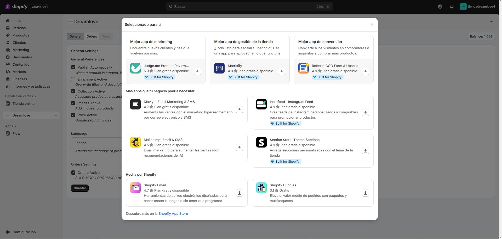
Apps: instalación, permisos y bloques en el tema. -
Configuración
Para conocer en detalle todos los ajustes de Shopify (dominio, pagos, envíos, etc.), consulta nuestro Manual de Configuración.
-
Contacto y soporte técnico
Para profundizar en el tema de Shopify, diríjase a la documentación correspondiente y a los recursos informativos asociados.